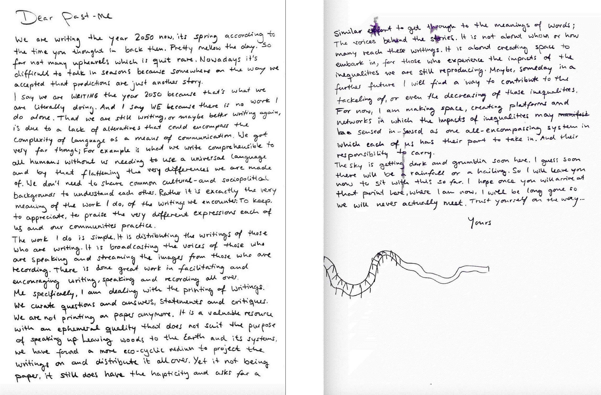

¶
🗓 Week 12 / 11 - 13 January 2023
designing for the next billion seconds¶
with Andrés Colmenares
the course designing for the next billion seconds was made from the love and energy that Andrés Colmenares brought to us. it was a course about storytelling and futures and how we can imagine them. actually, it is the first time, we are (collectively) imagining the futures; with long-term, critical and planetary mindsets. we talked about how to navigate the complexity, scale, and speed of transformations of the multidimensional implications of an environmental emergency. Andrés himself focuses on exploring and addressing the sociopolitical impacts of technology on the planet through collective learning. to challenge the illusion of a just digital economy accessible to all, his organization IAM addressed these issues in its Everything Manifesto. we are introduced to this manifesto and their technique of hypothetical questioning to develop (fictional) stories (about everyday life experiences) that potentially inspire transformations. we learn about collective ideation, decision making and collaboration approaches on designing for the futures.
we explored for the first time a fully inclusive, safe environment where we talked and discussed the inclusivity and exclusivity of our practices, the meaning of poetry, the words we use and those we listen to.
what if? everything - Manifesto¶
the Manifesto is a collection of proposals for addressing people’s complicated relationship to transformation. Hypothetical questions are posed here to stimulate the collective imagination with the concept of “what if”. design in the 2020s is about processes, not outcomes. the proposals are tools for a systematic approach to redesigning and for grasping interconnections and interdependencies. they aim to design across boundaries - in a collective and collaborative way to meet the many demands arising from the environmental emergency. the proposals cover 10 important points that are framed as hypothetical questions in the catalogue: Identity, Time, Problems, Scope, Growth, Energy, Business Models, Decision, Learning, Design.
words shape worlds¶
it matter what words we use to make words
as an example of the power of words, we are redefining our descriptions of the planet. the dominant narrative of planet Earth is that it is our place, our home - and it is only our human centrism why we call it planet Earth and not planet water, because basically there is more water than earth on its surface. one of Andres’ main incentives was to make us aware of the wording we use. instead of using the singular “future” when we talk about all that we have not yet experienced, we explicitly say that there are many potential stories that we will live – that we are becoming futures. we talked about the crisis of imagination and how it is becoming a real threat to human society if we completely loose our sociological imagination. we cannot understand any kind of economy (e.g. digital economy) outside of an ecological framework.
critical hope¶
in their project Billion Seconds Institute, they talk about intercitizenships (in its plural form again). this refers to dynamic processes and not to inherited privileges, its about becoming rather than being as intercitizenships are more-than-human. the aim with this wording is not to find differences between nations and its citizens but rather focus on common patters. the one billion seconds institute is a tool for thinking beyond what it means to be a citizen today, it is about economies of reciprocity and generosity – the term inter refers to reciprocal generosity. the futures are made of collective rights that come with collective duties. relating to this, there is an interesting reading I am engaging with these days: a text by Alberto Altés Arlandis and Oren Lieberman’s called intraventions in flux. the authors propose to replace the term ‘inter’ with ‘intra’, the first referring to something happening between two or more actants, whereas the latter, intra’ indicates something happening within the dynamics at stake. in line with an Object Oriented Ontology (OOO), which deconstruct the center and approaches all participating actants (things) in a situation as equally important an infuential, Arlandis and Lieberman outline how our attentiveness to what on ongoingly happening, defines the in-formation of identities and spaces. … as they move, we move along. So even more than seeing futures as a inter-relationship between entities, talking about intra-vening in current systematic thinkings about possible futures allows to take in a perspective from within the systems itself.
to practice this critical hope we put ourselves into a situation one billion seconds from now and imagined our daily life
additionally, we were invited to write a letter send by our future-self in the 2050s ‘(thus one billion seconds from now) 
positionality statement¶
“In Europe, we speak of minorities and diversity, but the truth is that the West’s minorities are the global majority – diversity is our norm” Lesley Lokko
“Positionality refers to the connections between place, identities, self-understanding, and relationships with people. It is defined by institutions, laws, and cultures are designed by those in power to give you access to resources, social capital, and rights” positionality media. therefore, positionality concerns background, age, gender, race, ethnicity, ability, first language, sexual orientation, educational background, geographical location, economic situation, and many other components that influence our daily life experiences, the lessons we teach our children and the legacies we leave behind.
Saying all of this is nothing new, it is well-known that Identities are not fixed but a result of a complex social network that interact with each other. In there, we occupy a unique social space based on our experience and background. Reflecting on the experiences I make in the spaces I move in, helps me to clarify how I navigate through this world. And how I do not navigate through other worlds. It can help me to find the blind spots I don’t see because of the privileges that come with the position I take and those I don’t. By looking at my positionality, I reveal the intersectionality (Kimberlé Crenshaw coined the term to give voice to black woman’s frustrations experiences in the white feminist movement) of my various selves.
So, it seems a good idea to reflect again and again which positions I take, and which positions I don’t take. Furthermore, when executing research, it is important to state my positionality towards the research I am conducting. The aim is to create transparency about the biases that shape the investigation. This includes reflecting on my social position and on the theoretical lenses I wear. When I speak, you will hear about the realities that I perceive of the world I find myself in.